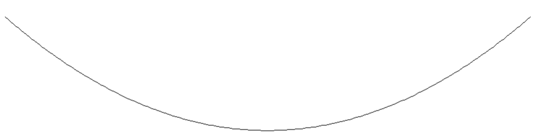
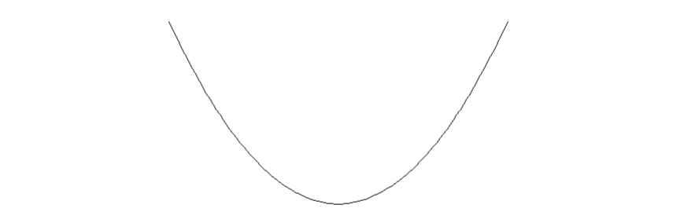
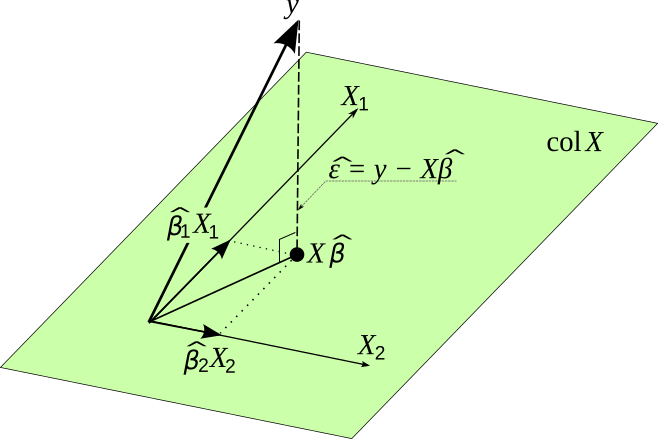

Disclaimer: materials in this pdf are used for STAT 709 “Mathematical Statistics” at the University of Wisconsin–Madison, but they are not guaranteed to be accurate. Consult textbooks whenever possible.
Score. The score measures how a likelihood responds to a parameter change.
Information. Its variance, Fisher information, gives a lower bound on the variance of unbiased estimators.
Main route. We prove the bound, examine equality and failure of equality, and connect it to Gaussian regression.
Extensions. Geometric curvature supports the main route; the KL interpretation and Gauss–Markov extension are optional.
Recap from earlier lecturesFrom Lectures 3, 4, 8, 11 and 12: likelihood and optimality · 1 min
Reminder only: this block introduces no new exam requirements.
UMVUE and completeness. An unbiased function of a complete sufficient statistic is the unique UMVUE, up to null sets. Used in Section 4.
Exponential families. A natural-parameter space containing an open set supplies the completeness result under its stated assumptions. Used in Section 5.1.
Likelihood asymptotics. Under regularity, the score fluctuation and Hessian determine the MLE limiting covariance. Used in Section 1.
Differentiation under integration. An integrable bound on parameter derivatives can justify differentiating the normalization integral. Used in Section 1.
Cauchy–Schwarz. The covariance inequality is the elementary engine of the information bound. Used in Section 2.
Learning goals
Compute a score and Fisher information with regularity assumptions stated.
Derive and interpret a Cramér–Rao bound.
Check whether an unbiased estimator attains the bound.
Use projection geometry and Gaussian linear transformations in a linear model.
In this lecture, we will introduce an important lower-bound result for unbiased estimation.
1. Fisher Information
Model. Suppose that \(X\) is drawn (e.g., single observation or sequence of i.i.d. data) from \(P_{\theta} \in \mathcal{P} = \{P_\theta: \theta\in\Theta\}\), where the parameter space \(\Theta \subset \mathbb{R}^k\) is an open set.
Density. Also suppose that \(P_\theta\) has p.d.f. \(f_\theta\) w.r.t. a dominating measure \(\mu\) on the observation space for any \(\theta\in\Theta\), and \(f_\theta\) is differentiable in \(\theta\).
For the parametric family \(\{P_\theta: \theta\in\Theta\}\), the Fisher information (matrix) is defined as \[\begin{aligned} I(\theta) = \mathbb{E}\left[\frac{\partial}{\partial \theta} \log f_\theta(X)\left(\frac{\partial}{\partial \theta} \log f_\theta(X)\right)^\top\right], \end{aligned}\] where the expectation is taken over \(P_{\theta}\). We also write \(I_X(\theta)\) to emphasize the dependence on \(X\) should confusion arise.
Note that by definition, \(I(\theta)\) is always positive semidefinite. We call \(\frac{\partial}{\partial \theta} \log f_\theta(X)\) the score function.
If \(X\) and \(Y\) are independent and their scores have mean zero and finite second moments, then the Fisher information about \(\theta\) in \((X, Y)\) is \[\begin{aligned} I_{(X, Y)}(\theta) = I_X(\theta) + I_Y(\theta). \end{aligned}\] If \(X_1, \ldots, X_n\) are i.i.d., then \[\begin{aligned} I_{(X_1, \ldots, X_n)}(\theta) = nI_{X_1}(\theta) \end{aligned}\]
Suppose that \(f_\theta\) is twice differentiable in \(\theta\). Under a “regularity condition,” \[\begin{aligned} I(\theta) = -\mathbb{E}\left[\frac{\partial^2}{\partial\theta\partial\theta^\top}\log f_\theta(X)\right]. \end{aligned}\]
Proof.
The joint log density is the sum of the two log densities, so its score is \(s_X+s_Y\). Independence and \(\E s_X=\E s_Y=0\) kill both cross terms in \(\E(s_X+s_Y)(s_X+s_Y)^\top\), leaving \(I_X+I_Y\).
A useful observation is the following identity. \[\begin{aligned} \frac{\partial^2}{\partial\theta\partial\theta^\top}\log f_\theta(X) &= \frac{\dfrac{\partial^2}{\partial\theta\partial\theta^\top}f_\theta(X)}{f_\theta(X)} \\ &\quad - \frac{\partial}{\partial\theta}\log f_\theta(X) \left[\frac{\partial}{\partial\theta}\log f_\theta(X)\right]^\top. \end{aligned}\] When taking expectation, we get \[\begin{aligned} \mathbb{E}\left[\frac{\dfrac{\partial^2}{\partial\theta\partial\theta^\top}f_\theta(X)}{f_\theta(X)}\right] &= \int \frac{\dfrac{\partial^2}{\partial\theta\partial\theta^\top}f_\theta(x)}{f_\theta(x)} f_\theta(x) \; d\mu(x) \\ &= \int \frac{\partial^2}{\partial\theta\partial\theta^\top}f_\theta(x) \; d\mu(x) \\ & = \frac{\partial^2}{\partial\theta\partial\theta^\top}\int f_\theta(x) \;d\mu(x)\quad\text{(regularity condition)} \\ & = 0.\quad (\text{since } \int f_\theta(x) \;d\mu(x)\equiv 1) \end{aligned}\]
◻
Meaning. The regularity condition is an annoying technicality that ensures the exchangeability of integrals with differentials (again, physicists don’t care).
Sufficient conditions. A useful sufficient condition is a parameter-independent support and locally integrable envelopes for the first two parameter derivatives.
Limitation. Smoothness alone, or compact support whose boundary moves with the parameter, does not suffice.
Examples. Regular full exponential families provide important examples.
What “Information” means.
Nonnegativity and additivity. Fisher information shares two familiar properties with quantities such as discrete entropy and KL divergence: it is nonnegative (positive semidefinite in the matrix case), and it is additive for independent observations under the stated mean-zero-score conditions. The additivity follows because independent centered scores have zero cross covariance.
Parameter scale. An important difference is its dependence on parametrization. Changing the scale of the parameter changes the score and therefore the numerical value of Fisher information. For a scalar change \(\theta=\psi(\eta)\), \[I_\eta(\eta)=[\psi'(\eta)]^2 I_\theta(\psi(\eta)).\] See Remark 1 for the matrix version and why the variance bound for a fixed target is unchanged.
Comparison. For comparison, discrete entropy is unchanged by a one-to-one relabeling of outcomes, and KL divergence is unchanged when the same invertible transformation is applied to both distributions.
Two different transformations. These are changes of the observations, whereas the formula above changes the parameter. Fisher information for a fixed parameter is also unchanged by an invertible, parameter-independent transformation of the observations. The entropy comparison here concerns discrete entropy; differential entropy for continuous variables is not generally invariant. See the change-of-variables discussion and Fisher-information notes.
See Exercise 1 in Section 8 for the full statement and complete solution.
2. Cramér–Rao Lower Bound
Positive definiteness. Recall that a symmetric matrix \(A\) is positive definite if \(u^\top A u > 0\) for all nonzero vectors \(u\), and it is positive semidefinite if \(u^\top A u \ge 0\) for all vectors \(u\).
Two equivalent notations. For symmetric matrices \(A\) and \(B\) of the same size, both \(A\ge B\) and \(A\succeq B\) will mean that \(A-B\) is positive semidefinite, equivalently \(u^\top(A-B)u\ge0\) for every vector \(u\).
Meaning of the inequality. This is the matrix order, not an entrywise comparison. We use \(\succeq\) in Theorem 1 to make that meaning explicit.
Target and dimensions. Let \(\nu = g(\theta)\) be the quantity of interest where \(g:\R^d\to\R^k\) is differentiable; in this section \(\theta\in\R^d\) and \(Dg(\theta)\) is the \(k\times d\) Jacobian.
Moment condition. Assume \(T\) has finite covariance.
Unbiased estimator. Suppose that \(X\) is drawn from a distribution in \(\{P_{\theta}: \theta \in \Theta\}\) and \(T(X)\) is an unbiased estimator of \(\nu\).
Density. Let \(f_{\theta}\) be the density function with respect to a reference measure \(\mu\).
Suppose that \(I(\theta)\) is positive definite, and that for any \(\theta \in \Theta\),
\[\begin{aligned} \frac{\partial }{\partial \theta} \int h(x) f_\theta(x)\; d\mu(x) = \int h(x) \frac{\partial }{\partial \theta} f_\theta(x)\; d\mu(x), \end{aligned}\]
(1)holds for \(h(x) \equiv 1\) and \(h(x) = T(x)\) (regularity conditions). Then, \[\begin{aligned} \mathrm{Cov}(T(X)) \succeq Dg(\theta)I(\theta)^{-1}Dg(\theta)^\top. \end{aligned}\]
Lower bound. Fisher Information provides a lower bound on variance (and thus MSE) of unbiased estimators for a parametric family.
When it proves optimality. It may not always be achievable, but if we can find an estimator that achieves this lower bound, then we certify the optimality of this estimator in the class of unbiased estimators (namely certifying UMVUE).
Reference. See wiki for the multivariate case.
Proof. Proof for only \(k = 1\) and \(d=1\); similar for \(k > 1\).
Goal. Our goal is
\[\begin{aligned} \mathrm{Var}(T(X)) \mathbb{E}\left[\left(\frac{\partial }{\partial \theta} \log f_\theta(X)\right)^2\right] \ge (g'(\theta))^2. \end{aligned}\]
(2)Two identities. It suffices to show the following two equalities. \[\begin{aligned} \mathbb{E}\left[\left(\frac{\partial }{\partial \theta} \log f_\theta(X)\right)^2\right] &= \mathrm{Var}\left(\frac{\partial }{\partial \theta} \log f_\theta(X)\right),\\ g'(\theta) &= \mathrm{Cov}\left(T(X), \frac{\partial }{\partial \theta} \log f_\theta(X)\right). \end{aligned}\]
Cauchy–Schwarz. Once they are proved, Eqn. 2 follows from Cauchy–Schwarz inequality: \[\begin{aligned} \mathrm{Var}(\xi_1) \mathrm{Var}(\xi_2) \ge \big[\mathrm{Cov}(\xi_1, \xi_2)\big]^2. \end{aligned}\]
The score has mean zero. Note that \[\begin{aligned} \mathbb{E}\left[\frac{\partial }{\partial \theta} \log f_\theta(X)\right] &= \int\frac{\dfrac{\partial }{\partial \theta} f_\theta(x)}{f_\theta(x)} f_\theta(x)\; d\mu(x) \\ &= \int \frac{\partial }{\partial \theta} f_\theta(x) \; d\mu(x) \\ &= \frac{\partial }{\partial \theta} \underbrace{\int f_\theta(x) \; d\mu(x)}_{\equiv 1} = 0, \end{aligned}\]
The target derivative is a covariance. and that \[\begin{aligned} \mathbb{E}\left[T(X)\frac{\partial }{\partial \theta}\log f_\theta(X)\right] &= \int T(x)\frac{\dfrac{\partial }{\partial \theta} f_\theta(x)}{f_\theta(x)} f_\theta(x)\; d\mu(x) \\ &= \int T(x)\frac{\partial }{\partial \theta} f_\theta(x) \; d\mu(x) \\ &= \frac{\partial }{\partial \theta} \int T(x)f_\theta(x)\; d\mu(x) \\ &= \frac{\partial }{\partial \theta} g(\theta) \qquad \text{ (by unbiasedness)}\\ &= g'(\theta). \end{aligned}\]
◻
Again, the differentiation identities require a common support and suitable local domination of the derivatives; decay of the density alone does not control its parameter derivatives.
Change of coordinates. Let \(\theta=\psi(\eta)\) be a differentiable change of coordinates with invertible Jacobian \(J=D\psi(\eta)\).
Information and target derivative. The chain rule for column scores gives \(s_\eta=J^\top s_\theta\), hence \[\begin{aligned} I_\eta(\eta)&=J^\top I_\theta(\psi(\eta))J,\\ D_\eta(g\circ\psi)&=D_\theta g\,J. \end{aligned}\]
The same variance bound. Substitution into the bound cancels \(J\) and \(J^{-1}\). The information matrix changes with coordinates, but the lower bound for the same target does not: we cannot cheat the lower bound by reparameterization.
Under the regularity and consistency conditions discussed in Lecture 11, the MLE has asymptotic variance \((nI_X(\theta))^{-1}\), which matches the lower bound asymptotically. This is a key advantage of MLE.
The unbiased variance bound.
The Cramér–Rao inequality compares the derivative of the target with information. Equality requires a centered estimator to be a linear transformation of the score, so the bound need not be attainable.
See Exercise 2 in Section 8 for the full statement and complete solution.
3. Two interpretations of Fisher information
3.1. Geometric view of Fisher information
Loss. \(\log f_\theta(x)\) is also known as the log-likelihood (or written as loglik) function. A natural loss that we want to minimize is the following negative loglik. \[\begin{aligned} \ell(\theta; X) = -\log f_\theta(X). \end{aligned}\]
Independent data. If we have i.i.d. data \(X = (X_1,\ldots, X_n)\), then \[\begin{aligned} \ell(\theta; X) = -\sum_{i=1}^{n} \log f_\theta(X_i). \end{aligned}\]
Expected curvature. Note that Fisher information is related to the expected curvature (in one dimension, the rate of change of tangent vector) of \(\ell(\theta; X)\), since \[\begin{aligned} I(\theta) = \mathbb{E}\left[\frac{\partial^2}{\partial\theta\partial\theta^\top}\ell(\theta; X)\right]. \end{aligned}\]
Stationary point. Recall that in MLE, we estimate \(\theta\) by minimizing the negative log-likelihood \(\ell(\theta; X)\). We provide some geometric heuristics. An obvious property of MLE is that an interior differentiable minimum corresponds to a stationary point of \(\ell(\theta; X)\), which means \[\begin{aligned} \frac{\partial}{\partial\theta}\ell(\hat \theta; X) = 0, \end{aligned}\]
Interpretation. Intuitively, consider the one-dimensional case for simplicity, a large \(I(\theta)\) means larger local convexity, so noise perturbation is easier to control. Figures 1 and 2 compare small and large \(I(\theta)\). The following is an intuitive understanding of Fisher information. \[\begin{aligned} \text{large } I(\theta) &\Rightarrow \text{easy to find }\theta \\ &\Rightarrow \text{less uncertainty / smaller lower bound}. \end{aligned}\]


In the Normal mean model, the negative log-likelihood above its minimum is \(I(\mu)(\mu-\bar X)^2/2\), where \(I(\mu)=n/\sigma^2\). Quadrupling information halves the horizontal width at a fixed likelihood drop. Compare Lecture 8’s likelihood-width example.
Let \(X_1, X_2, \ldots, X_n \stackrel{\iid}{\sim} \mathcal{N}(\mu, \sigma^2)\), where \(\sigma^2 > 0\) is known. \[\begin{aligned} \frac{\partial }{\partial \mu} \log f_\mu(X) = \sum_{i=1}^{n} (X_i - \mu) / \sigma^2 \Longrightarrow I(\mu) = \frac{n}{\sigma^2}. \end{aligned}\] We know \(\bar{X}\) is a UMVUE. It is easy to check \[\begin{aligned} \mathrm{Var}(\bar{X}) = [I(\mu)]^{-1}, \end{aligned}\] attaining the Cramér–Rao lower bound.
\(\sigma/\sqrt{n}\) is the “effective noise level.” A large sample size \(n\) reduces uncertainty.
Instructor’s NoteCurvature and uncertainty
Imagine locating the bottom of a bowl after a small tilt. A narrow bowl moves its minimizer only a little; a shallow bowl moves it farther. Expected likelihood curvature plays that role locally. The drawings preserve this intuition, while the score covariance is the precise definition.
3.2. Information theoretic interpretation
Low priority—not examined: Information theoretic interpretation
Let us recall the information notations.
Mutual Information: Defined generally for random variables, unchanged under one-to-one mapping.
Fisher Information: Defined for specific parametric models, changed under reparameterization.
Local comparison. Both information quantities measure the amount of information about \(\theta\) given observation \(X\). Here we give a concrete connection: Under certain “regularity conditions,”
\[\begin{aligned} D(P_{\theta_0} || P_{\theta_0 + \xi}) = \frac{1}{2}\xi^\top I(\theta_0)\xi + o(\|\xi\|^2); \end{aligned}\]
(3)Taylor expansion. this is because by Taylor expansion at \(\theta_0\), with all parameter derivatives below evaluated at \(\theta=\theta_0\), \[\begin{aligned} \log f_{\theta_0 + \xi}(X) &= \log f_{\theta_0}(X) + \xi^\top \nabla_\theta\log f_\theta(X) \\ &\quad + \frac{1}{2}\xi^\top \nabla^2_\theta(\log f_\theta(X))\xi + o(\|\xi\|^2), \end{aligned}\]
Taking expectation. and so by the definition of KL divergence and the fact \(\mathbb{E}_{\theta_0}[ \nabla_\theta\log f_\theta(X) ] =0\), we obtain Eqn. 3.
Interpretation. Thus, Fisher information characterizes how hard to distinguish two distributions in a parametric family under the KL divergence. To draw an analogy, Fisher information \(I(\theta_0)\) in Eqn. 3 plays a similar role as local convexity plays in optimization.
4. Cramér–Rao lower bound may not be attained
The Cramér–Rao inequality compares the derivative of the target with information. Equality requires a centered estimator to be a linear transformation of the score, so the bound need not be attainable.
Let \(X_1, X_2, \ldots, X_n \stackrel{\iid}{\sim} \mathcal{N}(\mu, \sigma^2)\), where \(\sigma^2 > 0\) is known, and we are interested in estimating \(\nu = g(\mu) =\mu^2\). The calculation below verifies
\(h(\bar{X}) = \bar{X}^2 - \frac{\sigma^2}{n}\) is UMVUE.
\(\mathrm{Var}(h(\bar{X})) = \frac{4\mu^2\sigma^2}{n} + \frac{2\sigma^4}{n^2}\).
Cramér–Rao lower bound for \(\nu\) is \(\frac{4\mu^2\sigma^2}{n}\).
If, however, we are interested in estimating \(\mu\), then as in Example 1, both \(\Var(\bar X)\) and the Cramér–Rao lower bound are \(\sigma^2/n\).
Note that \(h(\bar{X})\) matches the leading order term but not the exact lower bound. Why?
We know that \(\bar X\) is the MLE for estimating \(\mu\) with optimal asymptotic variance \(V = \sigma^2/n\). By the delta method, the first-order asymptotic variance of \(g(\bar X)\) is \([g'(\mu)]^2 V\)—this form is exactly the Fisher information under reparametrization, so the asymptotic variance matches the lower bound. However, the asymptotic variance does not need to equal the actual variance of \(h(\bar X)\); nevertheless, it matches the leading-order term in this case.
The reason for the gap between the variance and the lower bound is that we have a strict inequality in Cauchy–Schwarz inequality in Eqn. 2. Recall that the equality condition for Cauchy–Schwarz inequality is \(T(X)-g(\theta) = c_\theta\, \frac{\partial }{\partial \theta} \log f_\theta(X)\) a.s. for some constant \(c_\theta\). This does not hold for \(T(X) = h(\bar X)\).
See Exercise 3 in Section 8 for the full statement and complete solution.
5. Examples of Cramér–Rao Lower Bound
5.1. Exponential Family
Let \(\Theta \subset \mathbb{R}^k\) be an open set. Let \(\{f_\theta: \theta\in\Theta\}\) be the exponential family with p.d.f. \[\begin{aligned} f_\theta(x) = \exp\{\eta(\theta)^\top T(x) - \xi(\theta)\} c(x). \end{aligned}\] Suppose that \(X\) is drawn from a distribution \(P_{\theta}\) with corresponding p.d.f. \(f_{\theta}\) in this exponential family.
Regularity conditions in Eqn. 1 are satisfied for any measurable \(h\) with \[\begin{aligned} \E_\eta|h(X)| < \infty \end{aligned}\] throughout an open neighborhood of the parameter.
Consider the natural parameter \(\eta\). Then \[\begin{aligned} \mathrm{Var}(T(X)) = I(\eta). \end{aligned}\]
Suppose \(I(\eta)\) is positive definite, so the mean parameter is locally invertible, and \(\nu=\mathbb E[T(X)]\) is the parameter of interest, and \(\bar{I}(\nu)\) denotes the Fisher Information. Then \[\begin{aligned} \mathrm{Var}(T) = [\bar I(\nu)]^{-1}. \end{aligned}\]
Proof. Under natural parameters \(\eta\), we write the exponential family as \[\begin{aligned} f_\eta(X) = \exp\{\eta^\top T(X) - \xi(\eta)\}c(X). \end{aligned}\] (i) + (ii) proved in Homework 4. In addition, we proved that \(f_\eta(x)\) is \(C^{\infty}\). Also, from Homework 4, \[\begin{aligned} \nu = \frac{\partial }{\partial \eta}\xi(\eta). \end{aligned}\] By reparameterization, \[\begin{aligned} I(\eta) = \frac{\partial \nu}{\partial \eta} \bar{I}(\nu) \frac{\partial \nu}{\partial \eta}^\top. \end{aligned}\] Note that \[\begin{aligned} \frac{\partial \nu}{\partial \eta} = \frac{\partial^2}{\partial \eta\partial \eta^\top}\xi(\eta) = \mathrm{Var}(T) = I(\eta). \end{aligned}\] So, \[\begin{aligned} \bar{I}(\nu) = [I(\eta)]^{-1} = [\mathrm{Var}(T)]^{-1}. \end{aligned}\] ◻
5.2. Linear model
Fisher information shares two familiar properties with quantities such as discrete entropy and KL divergence: it is nonnegative (positive semidefinite in the matrix case), and it is additive for independent observations under the stated mean-zero-score conditions. The additivity follows because independent centered scores have zero cross covariance.
Here isotropic means mean zero and covariance equal to the identity. In particular, every unit-direction projection has variance one.
Basics.
Data \((X_1, Z_1), \ldots, (X_n, Z_n)\), where \(X_i \in \mathbb{R}\), \(Z_i \in \mathbb{R}^p\). Often independent across \(i = 1, 2, \ldots, n\), and they follow
\[X_i = \beta^\top Z_i + \epsilon_i,\]
(4)where
\(X_i\) is the response, observation, or outcome.
\(\beta\) is the coefficient vector.
\(Z_i\) is the vector of explanatory variables (or covariates, features, attributes, regressors, predictors).
\(\epsilon_i\) is the random error (or noise).
Design variables. Here \(Z_i\) can be random or nonrandom.
Working assumption. For simplicity, we will treat \(Z_i\) as fixed (If \(Z_i\) is random and independent with other random variables, we condition on \(Z_i\) and conclusions remain the same.)
Matrix form. We can also write the matrix form. \[\begin{aligned} \underset{n\times 1}{X} = \underset{n\times p}{Z} \cdot \underset{p\times 1}{\beta} + \underset{n\times 1}{\epsilon}. \end{aligned}\]
Intercept. Note: Eqn. 4 subsumes the case with an intercept term: \(X_i=\beta_0+\beta^\top Z_i+\epsilon_i\). In the matrix form, we include a column of ones in \(Z\) for the intercept.
Least squares estimator (LSE).
LSE \(\hat{\beta}\in\R^p\) satisfies
\[\begin{aligned} \|X - Z\hat{\beta}\|^2 = \min_{b\in\R^p}\|X - Zb\|^2. \end{aligned}\]
(5)For any \(\ell \in \mathbb{R}^p\), \(\ell^\top\hat{\beta}\) is called an LSE of \(\ell^\top\beta\). As we already know, LSE admits an explicit formula.
If \(Z\) has full column rank, then \[\begin{aligned} \hat{\beta} = (Z^\top Z)^{-1}Z^\top X. \end{aligned}\]
If \(Z\) does not have full column rank, then there are infinitely many solutions to Eqn. 5, and the minimum \(\ell_2\)-norm solution is unique and given by \[\begin{aligned} \hat{\beta} = (Z^\top Z)^+Z^\top X, \end{aligned}\] where \((\cdot)^+\) denotes the (Moore–Penrose) pseudoinverse.
Least squares as a projection.
Model space and fit. The vectors \(Zb\), as \(b\) varies, fill the column space \(\mathcal C(Z)\subseteq\R^n\). Least squares finds the point in this space closest to the observation vector \(X\). Write \(P_Z\) for the orthogonal projection onto \(\mathcal C(Z)\). The fitted vector and residual vector are \[\widehat X=Z\hat\beta=P_ZX,\qquad r=X-\widehat X=(I_n-P_Z)X.\]
Orthogonality. The residual is perpendicular to every column of \(Z\): \(Z^\top r=0\). For full column rank, \(P_Z=Z(Z^\top Z)^{-1}Z^\top\); the geometric projection is still unique when the coefficient vector is not.
Reading the projection diagram.
The shaded plane represents the column space of the design matrix. The fitted vector lies in this plane; the residual joins the fitted vector to the observation and is perpendicular to the whole plane.
The diagram uses \(y\) for our observation vector \(X\), \(X\) for our design matrix \(Z\), and \(\hat\varepsilon\) for our residual \(r\). Thus its \(X\hat\beta\) is our \(Z\hat\beta=\widehat X\).


Why the projection is closest.
Pythagoras. For any coefficient \(b\), the two terms in \(X-Zb=r+(\widehat X-Zb)\) are orthogonal. Pythagoras gives \[\|X-Zb\|^2=\|r\|^2+\|\widehat X-Zb\|^2\ge\|r\|^2.\]
Numerical illustration. For a numerical illustration, take \(Z=(1,1)^\top\) and \(X=(1,3)^\top\). Then \(\hat\beta=(X_1+X_2)/2=2\), and the squared error is \(2+2(b-2)^2\): its minimum is \(2\), compared with \(4\) at \(b=1\).
Explained and unexplained parts. The fit captures the component along the model space; the residual is what remains in the perpendicular directions.
More pictures. For another visual explanation, see Strang’s MIT lecture on projections onto subspaces.
From orthogonality to Gaussian independence.
Gaussian assumptions. The geometry does not require Gaussian noise. To anticipate Theorem 3, now suppose \(X=Z\beta+\epsilon\), with fixed full-column-rank \(Z\), \(n>p\), and \(\epsilon\sim N(0,\sigma^2 I_n)\).
Gaussian transformations. Recall from Lecture 1: affine transformations of Gaussian vectors that a linear transformation of a Gaussian vector is still Gaussian. In particular, \(P_ZX\) and \((I_n-P_Z)X\) are jointly Gaussian, and their cross-covariance is \[\operatorname{Cov}(P_ZX,(I_n-P_Z)X) =\sigma^2P_Z(I_n-P_Z)=0.\]
Why independence follows. Joint Gaussianity turns this zero cross-covariance into independence. Orthogonality alone would not give independence for arbitrary noise.
Reading Theorem 3 in this basis.
Choose coordinates. Choose orthonormal columns \(Q_1\) spanning \(\mathcal C(Z)\) and complete them with \(Q_2\) to an orthogonal matrix \(Q=(Q_1,Q_2)\).
Separate the two groups. For \(G=\epsilon/\sigma\), the vector \(Q^\top G\sim N(0,I_n)\) has independent standard Normal coordinates. The fitted vector depends only on \(Q_1^\top G\) (and the fixed mean), while the residual depends only on \(Q_2^\top G\).
Functions and residual length. Thus any function of the fit, including \(\ell^\top\hat\beta\), is independent of any function of the residual, including \(\hat\sigma^2\). Moreover, \[\frac{\|r\|^2}{\sigma^2} =\|Q_2^\top G\|^2 =\sum_{j=p+1}^{n}(Q^\top G)_j^2\sim\chi^2_{n-p}.\]
Connection to the theorem. This explains both the independence and the \(n-p\) degrees of freedom in Theorem 3.
Optimality of LSE.
We make the following parametric assumption: \(\epsilon\sim N(0,\sigma^2I_n)\), where \(\sigma^2 > 0\) is unknown.
Under the above assumption, if \(Z\) has full column rank and \(n>p\), then
\(\ell^\top\hat{\beta}\) is UMVUE of \(\ell^\top\beta\).
\(\hat{\sigma}^2 = \frac{1}{n-p} \|X - Z\hat{\beta}\|^2\) is UMVUE of \(\sigma^2\).
Proof. \[\begin{aligned} \|X - Z\beta\|^2 &= \|X - Z\hat{\beta}\|^2 - 2\beta^\top Z^\top X \\ &\quad + \|Z\beta\|^2 + \|Z\hat{\beta}\|^2. \end{aligned}\] The joint p.d.f. of \(X\) is \[\begin{aligned} p_{\beta,\sigma^2}(x) &= \frac{1}{(2\pi\sigma^2)^{n/2}}\exp\Biggl\{\frac{\beta^\top Z^\top x}{\sigma^2} \\ &\qquad - \frac{\|x - Z\hat\beta \|^2 + \|Z\hat{\beta}\|^2}{2\sigma^2} - \frac{\|Z\beta\|^2}{2\sigma^2}\Biggr\}. \end{aligned}\]
Complete and sufficient. We can use the property about exponential family (Proposition 1 from Lecture 12) to check that \((Z\hat \beta, \|X - Z\hat{\beta}\|^2)\) is complete and sufficient for \(\theta = (\beta, \sigma^2)\).
Functions of the statistic. Note that \(\ell^\top\hat{\beta}\), \(\hat{\sigma}^2\) are functions of \(Z \hat \beta\), \(\|X - Z\hat{\beta}\|^2\) respectively.
Unbiasedness. Further, it is easy to verify unbiasedness (see Exercise 7) \[\begin{aligned} \mathbb{E}[\ell^\top\hat{\beta}] = \ell^\top \beta,\qquad \qquad \mathbb{E}[\hat{\sigma}^2] = \sigma^2. \end{aligned}\]
Conclusion. Therefore, Lehmann-Scheffé theorem implies UMVUE.
◻
In fact, we can characterize the distribution of the LSE and residual explicitly, which is useful for deriving statistical tests for LSE.
Under the same assumption as in Theorem 2, \(\ell^\top\hat{\beta}\) is independent of \(\hat{\sigma}^2\). Specifically, \[\begin{aligned} \ell^\top \hat{\beta} &\sim \mathcal{N}(\ell^\top \beta, \sigma^2\ell^\top(Z^\top Z)^+\ell),\\ \hat{\sigma}^2\frac{n-p}{\sigma^2}&\sim \chi^2_{n-p}. \end{aligned}\]
Proof. Proof sketch.
Projections. Denote \((P_Z, P_Z^\perp)\) to be the projection matrices to the column space of \(Z\) and its orthogonal complement in \(\R^n\), respectively. Then, \[\begin{aligned} Z\hat{\beta} = P_Z(X),\quad X - Z\hat{\beta} = P_Z^\perp(X). \end{aligned}\]
Standardized noise. After subtracting \(Z\beta\) and dividing by \(\sigma\), the noise is isotropic1.
Rotation. An orthogonal transformation preserves its standard Gaussian distribution.
Independence and residual law. Thus, \[\begin{aligned} P_Z(X)&\text{ is independent of } P_Z^{\perp}(X),\\ \frac{1}{\sigma^2}\|P_Z^\perp(X)\|^2&\sim \chi_{n-p}^2. \end{aligned}\]
◻
There is a geometric intuition behind this proof: the best linear fit is the orthogonal projection of the observation vector \(X\) onto the subspace spanned by the columns of \(Z\). See the earlier projection picture and orthonormal-coordinate explanation.
Fisher Information.
We consider the parametric assumption \(\epsilon\sim N(0,\sigma^2I_n)\) and the unknown parameters are \(\theta = (\beta, \sigma^2)\). \[\begin{aligned} I(\theta) = \frac{1}{\sigma^2} \begin{pmatrix} Z^\top Z & 0\\ 0 & \frac{n}{2\sigma^2} \end{pmatrix}. \end{aligned}\]
Rank and identifiability. If \(Z\) is not of full rank, \(I(\theta)\) may not be invertible. Indeed, in the null space Ker(\(Z\)), two distributions \(P_\theta\), \(P_{\theta'}\) are not distinguishable.
Attaining the bound. It is clear that LSE is the MLE for estimating \(\beta\) under our assumption, and it attains the Cramér–Rao lower bound; the corresponding question for \(\sigma^2\) is the linked exercise below.
Regression and information.
For fixed full-column-rank design \(Z\) with Gaussian noise, \(I_{\beta\beta}=Z^\top Z/\sigma^2\). Least squares attains its inverse covariance, while unbiased residual variance uses the remaining \(n-p\) dimensions.
See Exercise 4 in Section 8 for the full statement and complete solution.
6. Further reading
Further reading: Further reading
The information perspective of Fisher information can be found in many sources, e.g., Section 2.6.2 of [1]. Fisher information is a central quantity in classical mathematical statistics, and in STAT 710 you will revisit this concept, especially when studying MLE.
Least squares estimator.
The discovery of least squares has an interesting history. A nice reference is Wikipedia page.
Least squares estimators can be derived using either MLE or the method of moments, both of which will be covered in STAT 709 and STAT 710. The practical side of least squares is covered in STAT 849 and 850. Some key related notions:
collinearity,
basis expansion,
least absolute deviations.
For solving nonlinear least squares, a classical approach is iterative reweighted least squares.
In the modern context where dimension grows proportionally with sample size, least squares estimator is inconsistent; in over-parametrized settings, least squares estimator is not uniquely defined, but min-norm solution is usually expected and enjoys good statistical properties.
Optimality of LSE under weaker conditions
We make the following assumptions: \(\mathbb{E}[\epsilon] = 0\), \(\Var(\epsilon) = \sigma^2 I_n\) where \(\sigma^2 > 0\) is unknown.
Under the above assumptions, if \(Z\) has full column rank and \(n>p\), then \(\ell^\top\hat{\beta}\) is the best linear (linear in \(X\)) unbiased estimator (BLUE) of \(\ell^\top \beta\).
We make weaker assumptions, and accordingly the optimality is stated in a smaller space of candidate estimators.
Key ideas
Fisher information measures local likelihood sensitivity and depends on parametrization.
The Cramér–Rao bound requires regularity and can fail to be attained.
Sufficient complete statistics and information bounds give different routes to optimality.
Least-squares projection explains fitted values and residuals; Gaussianity additionally yields independence.
Detailed reference
Detailed reference
Fisher information is nonnegative, adds across independent observations under the stated regularity conditions, and depends on the parametrization. Changing parameter coordinates is different from an invertible recoding of the observations. See the source checkpoint.
The Cramér–Rao inequality compares the derivative of the target with information. Equality requires a centered estimator to be a linear transformation of the score, so the bound need not be attainable. See the source checkpoint.
For fixed full-column-rank design \(Z\) with Gaussian noise, \(I_{\beta\beta}=Z^\top Z/\sigma^2\). Least squares attains its inverse covariance, while unbiased residual variance uses the remaining \(n-p\) dimensions. See the source checkpoint.
Looking ahead
Cramér–Rao bounds the variance of unbiased estimators. Lecture 14 asks how likely a large deviation is at a fixed sample size, using exponential tail bounds rather than only a variance comparison. Continue to Lecture 14.
Exercises and complete solutions8 exercises · complete solutions
For \(n\) independent Bernoulli\((p)\) observations, \(0<p<1\), compute the score and information for \(p\).
Reveal solution
The score is \(\sum_i(X_i-p)/[p(1-p)]\). It has mean zero and variance \(np(1-p)/[p^2(1-p)^2]=n/[p(1-p)]\). Independence yields the factor \(n\). The endpoints are excluded because the regular interior model and its score formula change there.
For i.i.d. Poisson\((\theta)\) data, show that the sample mean attains the Cramér–Rao bound for \(\theta>0\).
Reveal solution
The score is \(\sum_i(X_i/\theta-1)\), with information \(n/\theta\). Since \(\bar X\) is unbiased and has variance \(\theta/n\), it attains \(1/I(\theta)\) and is UMVUE among unbiased square-integrable estimators.
For i.i.d. \(N(\mu,1)\) observations, consider \(H=\exp(\bar X-1/(2n))\). Verify unbiasedness for \(e^\mu\), compute its variance, and compare with the Cramér–Rao bound.
Reveal solution
The Normal MGF gives \(\E H=e^{\mu}\) and \(\E H^2=e^{2\mu+1/n}\). Thus \(\Var H=e^{2\mu}(e^{1/n}-1)\). Information is \(n\) and the target derivative is \(e^\mu\), giving bound \(e^{2\mu}/n\). Since \(e^x>1+x\) for \(x>0\), the bound is strict at every finite \(n\).
In full-rank Gaussian regression with \(n>p\ge1\), compare the variance of \(\hat\sigma^2=\|X-Z\hat\beta\|^2/(n-p)\) with the information bound for \(\sigma^2\).
Reveal solution
The chi-square law gives variance \(2\sigma^4/(n-p)\). The information matrix is block diagonal, with variance-parameter information \(n/(2\sigma^4)\), so its bound is \(2\sigma^4/n\). The former is strictly larger for \(p>0\). Being UMVUE does not imply attaining the CR bound.
For one Uniform\((0,\theta)\) observation, explain why differentiating the log density on its interior does not justify the regular CR bound.
Reveal solution
For \(0<x<\theta\), the formal score is \(-1/\theta\), whose mean is not zero. The derivative of the integral \(\int_0^\theta\theta^{-1}dx=1\) includes a moving-boundary contribution. Interchanging the derivative with the integral over the interior alone misses that term. Therefore the regular score identities and the stated CR theorem do not apply.
Prove the vector CR bound from \(\E s=0\), \(\E ss^\top=I\) and \(\E[(T-g)s^\top]=Dg\).
Reveal solution
Let \(R=T-g-Dg\,I^{-1}s\). Expanding its covariance and using the three identities gives \(\mathrm{Cov}(R)=\mathrm{Cov}(T)-Dg\,I^{-1}Dg^\top\). Every covariance matrix is positive semidefinite, proving the claim. Equality holds exactly when \(R=0\) almost surely.
Prove \(\E\hat\beta=\beta\) and \(\E\|X-Z\hat\beta\|^2=(n-p)\sigma^2\) under the stated fixed-design assumptions.
Reveal solution
The formula gives \(\hat\beta=\beta+(Z^\top Z)^{-1}Z^\top\epsilon\), with mean \(\beta\). Let \(P=Z(Z^\top Z)^{-1}Z^\top\). The residual is \((I-P)\epsilon\), so its expected squared norm is \(\tr[(I-P)\sigma^2I]=\sigma^2(n-p)\), since \(P\) is a rank-\(p\) orthogonal projector. This expectation argument needs only the first two noise moments.
Low priority—not examined: Gauss–Markov by an orthogonal decomposition
Prove the BLUE claim for \(a^\top X\) estimating \(\ell^\top\beta\) when \(Z^\top a=\ell\).
Reveal solution
The least-squares coefficient is \(a_0=Z(Z^\top Z)^{-1}\ell\). Any unbiased coefficient has \(a=a_0+d\) with \(Z^\top d=0\). Since \(a_0\) belongs to the column space of \(Z\), \(a_0^\top d=0\). Therefore \(\Var(a^\top X)=\sigma^2(\|a_0\|^2+\|d\|^2)\ge\sigma^2\|a_0\|^2\).
References
Terminology notes
Here isotropic means mean zero and covariance equal to the identity. In particular, every unit-direction projection has variance one.↩︎
What changed
October 14, 2026. Added issue-reporting links to the webpage and PDF. The mathematics and priority assignments are unchanged in this update.
October 14, 2026 (figure follow-up). Restored the original Fisher-information sketches and the credited least-squares projection figure, with its notation key.
Comments
Discuss an idea or ask a public question. Include a section or exercise number when relevant. For errors in the notes or website, Report an issue.
Public comments use Disqus. Enable JavaScript to load them.
Email the instructor for a private question or if comments are unavailable.